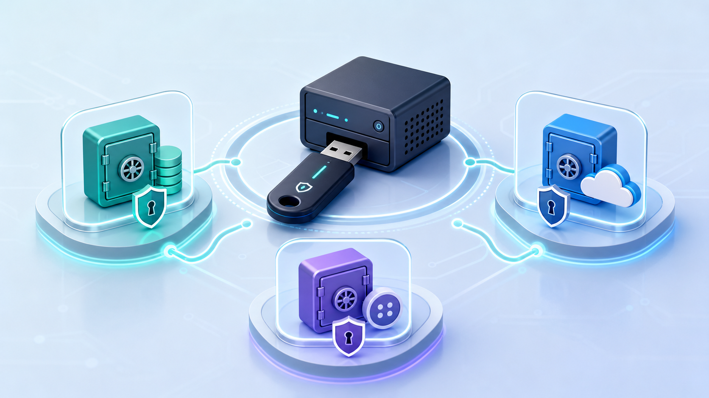
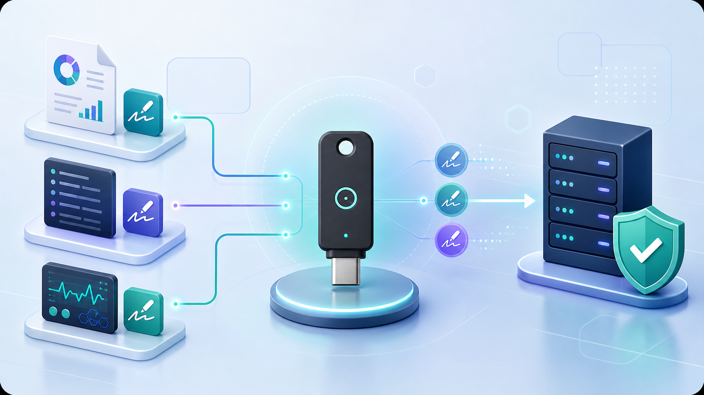
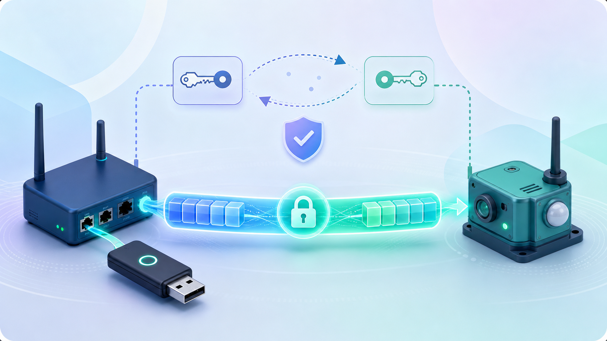

Credentials and OTP
Database passwords, cloud API keys, and hardware-protected OTP records.
Application Guide
Choose your use case. Each scenario shows the Ankhor function area, suggested commands, integration idea, and where IIST can provide implementation support.
Ankhor Key Plus provides a fixed set of hardware-rooted application security functions. It is not an unlimited custom firmware product by default. Users can use the provided CLI/API functions directly, or request IIST integration support for production deployment.
Contact IIST for integration support, provisioning scripts, user-specific demos, or production workflow design.
Many protected operations require the same setup flow. Scenario sections focus on the business function commands, while mode selection and activation are common preparation steps.
ports
open <PORT>
info
secure
change-mode <akm|pm|otp|byo>
activate <PIN>
First-time provisioning only:
set-pin <PIN>
Useful state checks:
check-mode
is-activated
pin-status
Cleanup:
deactivate
quitThese placeholder illustrations group the cookbook into practical integration areas. They are safe to replace later with detailed product diagrams.

Database passwords, cloud API keys, and hardware-protected OTP records.
Configuration encryption, database key wrapping, device-bound data, and local secrets.

Telemetry, logs, AI output, content authenticity signing support, and local verification.

Gateway-to-sensor pairing and encrypted communication between paired devices.
Mode control, activation, deletion, reset, device information, TRNG, and debug workflows.
Each entry starts from a user goal and maps it to concrete Ankhor function areas.
pm add -t "database" -n "main-db" --password "<DB_PASSWORD>"
pm get -t "database" -n "main-db"
pm del -t "database" -n "main-db"akm add -t "cloud-api" --key "<API_KEY>"
akm get -t "cloud-api"
akm del -t "cloud-api"
akm listotp add --len 6 --ts 30 -t "vpn" -n "admin" --secret "AA BB CC ..."
otp get -t "vpn" -n "admin"
otp del -t "vpn" -n "admin"
otp listbyo edge-enc --pt <Hex32>
byo edge-dec --ct <Hex32>byo edge-enc --pt <Hex32>
byo edge-dec --ct <Hex32>byo sign-gen --idx 0
byo sign --idx 0 --msg <Hex32>
byo get-verify-key --idx 0byo sign-gen --idx 0
byo sign --idx 0 --msg <Hex32>
byo get-verify-key --idx 0byo sign --idx 0 --msg <Hex32>
byo get-verify-key --idx 0byo sign-gen --idx 0
byo sign --idx 0 --msg <Hex32>
byo get-verify-key --idx 0byo pair-init
byo pair --idx 0 --peer <Hex64>
byo statusbyo set-iv --iv <Hex16>
byo enc --idx 0 --pt <Hex32>
byo dec --idx 0 --ct <Hex32>byo edge-enc --pt <Hex32>
byo edge-dec --ct <Hex32>byo secret-status
byo save --idx 0 --data <Hex>
byo read --idx 0
byo del-secret --idx 0akm del -t "<TITLE>"
pm del -t "<TITLE>" -n "<NAME>"
otp del -t "<TITLE>" -n "<NAME>"
byo del --idx <0..7>
byo del-secret --idx <0..3>
byo sign-del --idx <0..7>byo get-key --seed <ASCII>byo verify --idx 0 --msg <Hex32> --sig <Hex64>change-mode akm
change-mode pm
change-mode otp
change-mode byo
pin-status
is-activated
activate <PIN>
deactivatepin-status
activate <PIN>
deactivatetrngports
open <PORT>
inforeset-appreset-all
reset-all --skip <MODE>raw <HEX...>
verbose on
verbose off| User Goal | Suggested Ankhor Function Area |
|---|---|
| Passwordless login | FIDO2 authentication use case, no public test tool |
| Protect database password | PM |
| Protect API token | AKM |
| Generate OTP code | OTP |
| Encrypt local config | BYO edge encryption |
| Protect local database key | BYO edge encryption |
| Sign telemetry | BYO signing |
| Sign logs | BYO signing |
| Sign AI output | BYO signing |
| Support content authenticity signing | BYO signing |
| Pair gateway and sensor | BYO pairing |
| Encrypt paired-device payload | BYO shared-slot encryption |
| Device-bound data protection | BYO edge encryption |
| Store local secret blob | BYO local secret storage |
| Remove old secrets | AKM, PM, OTP, BYO delete functions |
| Deterministic key derivation | BYO get-key |
| Verify signatures | BYO verify |
| Separate trust domains | Mode control |
| Operator-controlled secure action | PIN and activation |
| Validate random source | TRNG |
| Device identity check | info |
| Reset one app | reset-app |
| Wipe device | reset-all |
| Debug integration | raw, verbose |
Ankhor Key Plus provides fixed hardware-rooted functions. It is not an unlimited custom firmware product by default. Users can use the provided CLI/API functions directly, or request IIST integration support for production deployment.
Need this implemented in your product? Contact IIST for integration support.